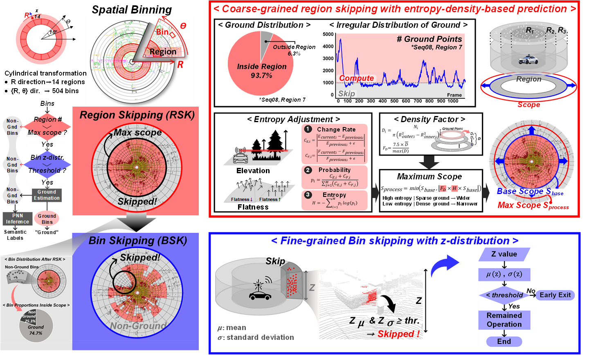
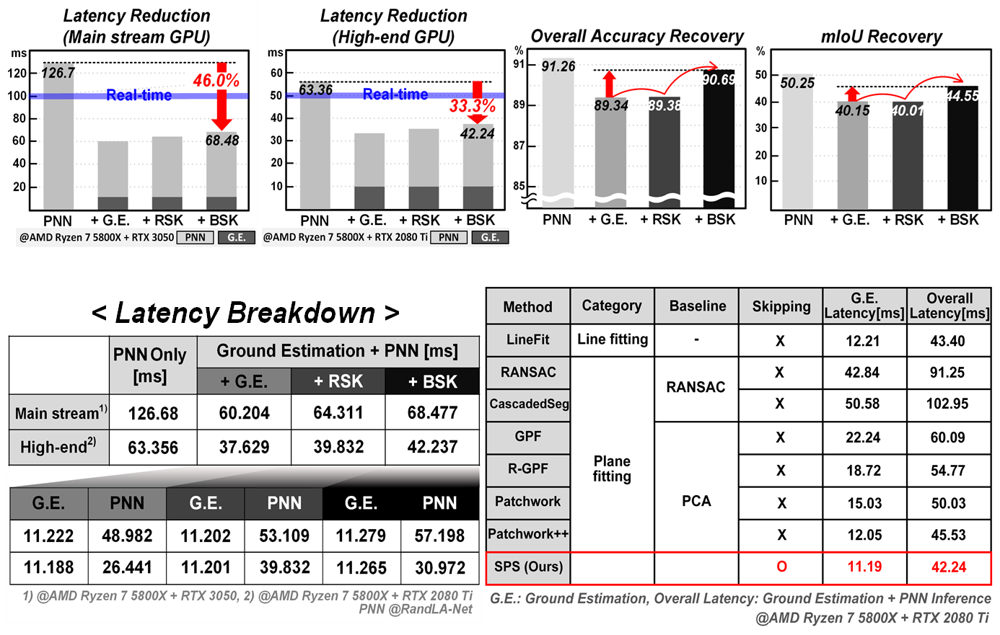

Real-time Point Cloud Segmentation System
ISCAS 2025
Overview
This project presents a fast and accurate point segmentation system for real-time 3D-LiDAR semantic segmentation on autonomous driving platforms. The key challenge is deploying large-scale point cloud neural networks under strict latency constraints on edge hardware.
Key Contributions
1. Adaptive Ground Estimation: Excludes ground points from neural network inference, reducing latency by 46.0%. Uses 2-step bin skipping to avoid accuracy loss from false positives.
2. Coarse-grained Region Skipping (RSK): Entropy-and-density-based region analysis excludes large empty areas from ground estimation, reducing computation.
3. Fine-grained Bin Skipping (BSK): Z-distribution analysis skips non-ground bins within remaining areas, further reducing inference overhead.

Results
Processing time of 42.24 ms with 90.69% 3D semantic segmentation accuracy on the SemanticKITTI dataset. Achieved real-time performance (< 50 ms) on GPU platforms.
